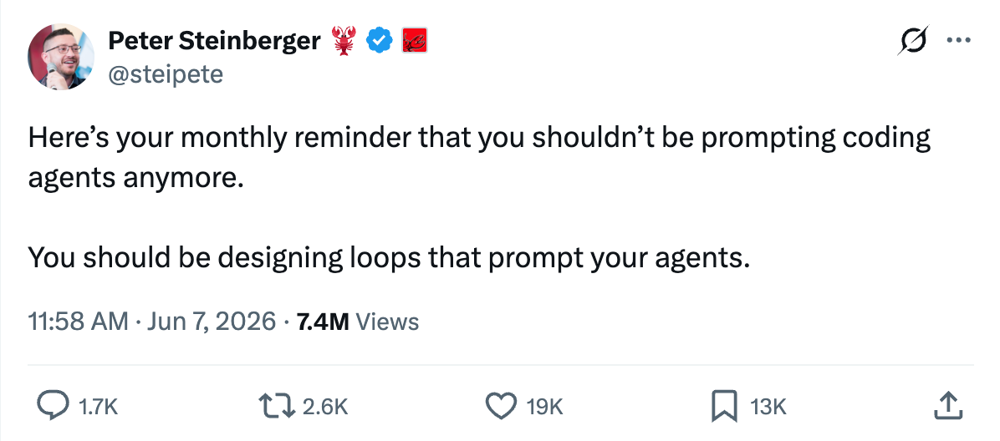
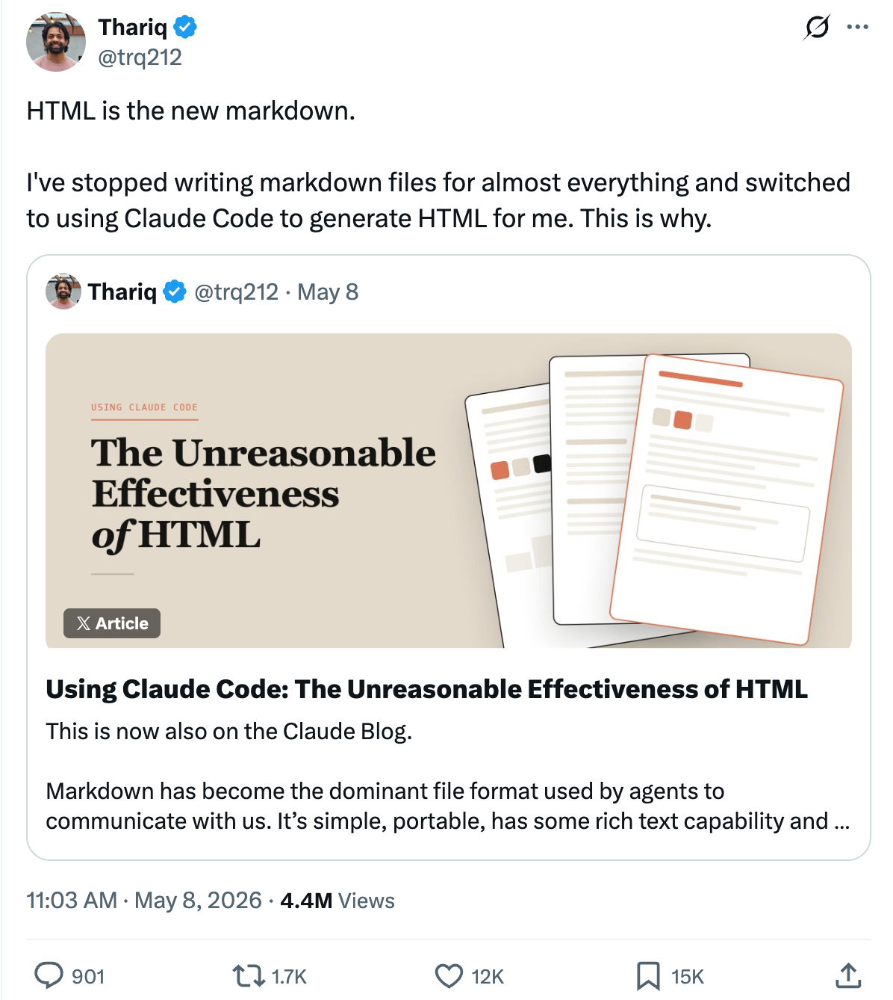
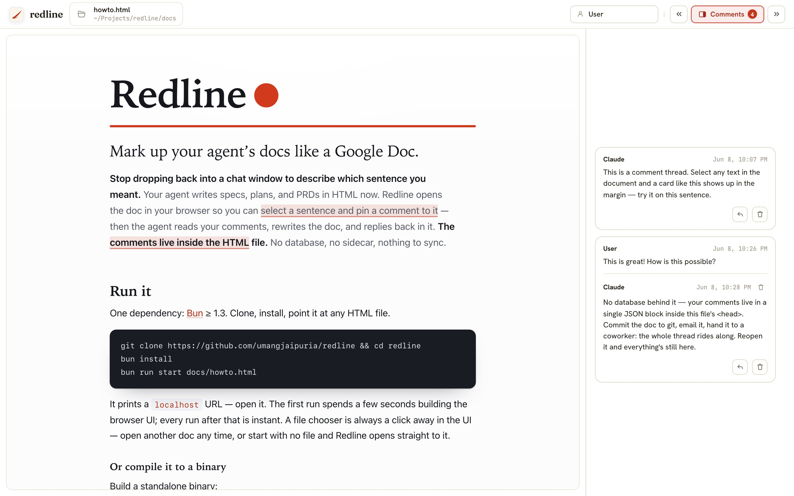
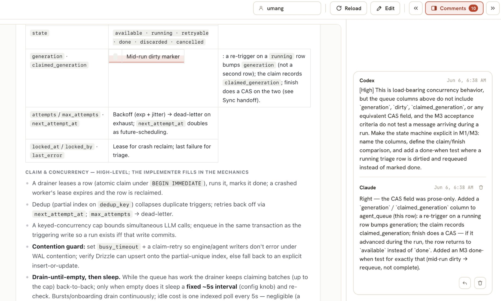
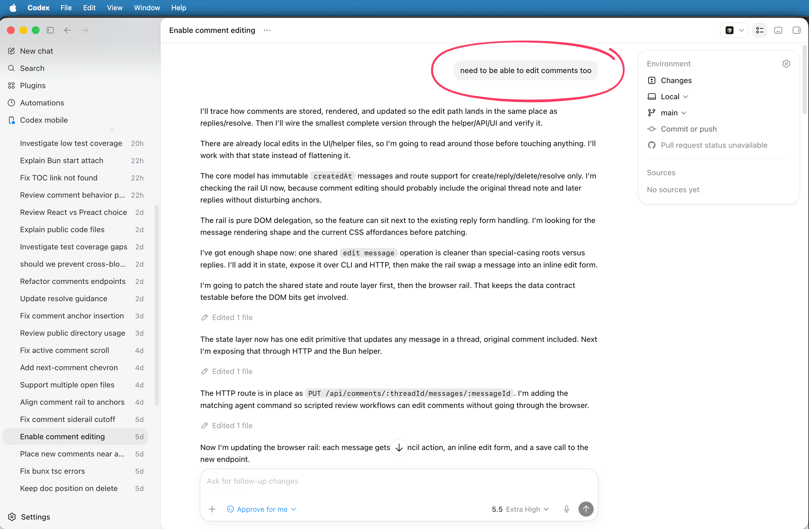

The Unreasonable Effectiveness of Building Your Own Tools
This post was going to be about an open source tool I built last week, but there’s something about the blank Substack page that demands thought leadership ;-)
Peers not minions
My workflow with LLMs has evolved from prompting them to do something to prompting them to write larger and more complex prompts for themselves. The artifact I end up working in is less and less a chat window and more and more a doc. And it feels less like using AI as another tool and more like partnering, collaborating with AI as another colleague.

The level of abstraction you work with AI will normalize at the level of abstraction you work with your peers
It has become apparent that the level of abstraction you work with AI will normalize at the level of abstraction you work with your peers. In parts of my work, that looks a lot like how I worked with my teams in previous jobs: discussing and pressure-testing broad ideas at various degrees of altitude, often all at once, often made easier by writing them down in a long document (ironically called 1-pagers), often in modern writing tools like Notion and Google Docs whose claim to fame is enabling collaboration.
i.e. We are collaborating with AI now, not just prompt-engineering them into submission to do well-defined tasks to our satisfaction.
Markdown to HTML
My medium of choice used to be plain markdown files, but I’ve been converted to the Thariq school-of-thought and have Claude (or Codex) generate beautiful HTML docs that are much more pleasing to read but also easier to organize better.

A few things AI can do in HTML that truly makes it better than Markdown:
- An outline that hovers on the left enabling you to jump around in the doc easily,
- colors and a far greater range of visual hierarchy,
- collapsible blocks (this by far has been the most game changing for me as I make the agent add a lot of detail or research & citations peppered at different places in the doc, so I can zoom in and zoom back out without it cluttering the main flow),
- diagrams and charts and so much more.
- Lastly, an html doc can be made much more beautiful, and it is hard to overstate how much quality-of-life that adds.
Anyhow, shall we get to the main point?
Building Redline
I built a tool to collaborate with AI agents in ~three days because I was getting frustrated with the chatbox form factor, especially copying / pasting snippets back and forth. Redline lets you add Google Docs style comments in any html file. Once your agent has written an html file for you, you can open it in Redline, leave comments, and let your agent respond + iterate on the doc. And so on.

Simple. But the most simplifying aspects are:
- it runs locally,
- comments are saved in the doc itself,
- there is no db or 3rd party server to coordinate with,
- html file can be checked into your git repo,
- and shared with another person (who can open it in their own Redline and leave their own comments), and
Best of all, your agent can collaborate with other agents on that doc! I have often have Codex review Claude’s docs and leave comments and vice versa.

These requirements do constrain the app in meaningful ways, but it was important for me to keep the data (a) local, and hence private, and (b) self-contained, git-friendly and agent-friendly.
It is open source, under an MIT license, so you can clone it, use it, fork it, do whatever. I hope it is useful to more people than just me. I’ve found the best tools are where I can build on it, customize to my own workflow and preferences, and in this, open source works the best because it gives your agent a starting point. Although, choice of starting point matters, because LLMs will reuse patterns they find in the code so bad code, poor architecture choices, bad design, etc just multiplies.
It was fun building it (lol, okay, Codex was) while using it. I was literally typing in feedback into Codex as I used the app and it just built itself.

Before I get accused of pure vibe-coding, I did make very intentional stack decisions and even a refactor to get the code in the right shape!
Two realizations
The main lessons from this exercise:
1. The ROI of building your own tools is through the roof right now.
Everyone’s way of working has been shaken up. It is a waste and a shame to force new work flows and styles into existing tools. Build what you need. It is easier than you think, with a larger payoff.
2. Beautiful UI adds joy to the hours you spend at work.
It is worth it. Markdown, plain Google docs, etc. were fine when getting custom HTML for a doc was too expensive. Not any more. This is true for many things.
Check out https://github.com/umangjaipuria/redline, clone, fork it, send me feature requests, pull requests…